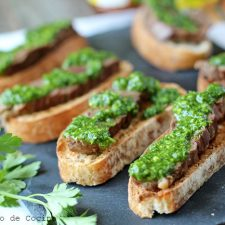

crostinis con queso blanco
Ingredientes
- 1 queso blanco de la marca Tropical Cheese, 16 oz (454 gr)
- 1 tomate grande cortado en pequeños cuadros
- 2 cucharadas de perejil picado
- 1/2 cucharadita de 1 cucharada de cilantro picado
- 1 diente de ajo picado fino
- 2 cucharadas de ciboulette Sal y pimienta a gusto
- 1/2 taza de aceite de oliva
- 1 pan baguette
Preparacion
- En una fuente colocar el ajo picado, cilantro, perejil y menta. Sazonar con sal y pimienta.
- Agregar el aceite y revolver bien.
- Unir todo muy bien y dejar reposar unos minutos.
- Mientras tanto cortar pequeños trozos de pan baguette y llevar al horno a 350°F (180°C) por unos 8 minutos.
- Una vez bien unido todo estirar la masa con la ayuda de un uslero, pero debe dejarla con 2 cms de grosor.
- Luego armar los crostinis colocando encima de cada pan una buena porción de la mezcla de queso blanco.